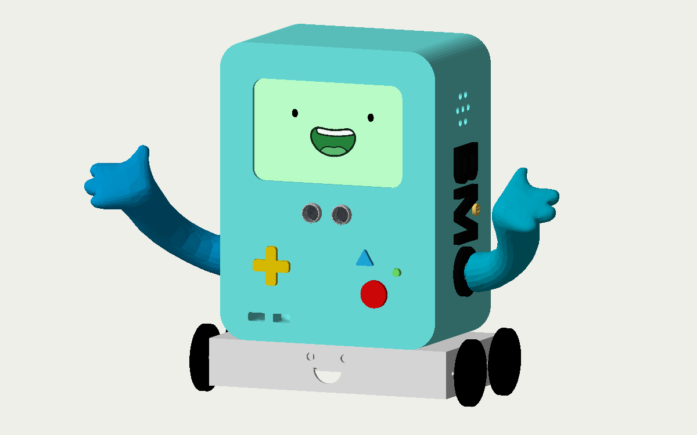

Mechatronics Engineering Student / Robotics & AI
Vunny Grover.
“The only way to do great work is to love what you do.”
Steve Jobs
Projects01

BMO
An Adventure Time inspired robot with a voice and an expressive animated face! Explore the robot in 3D and see how it comes together.
View projectA little about me
I love to build!
I’m Vunny, a Mechatronics Engineering student at the University of Auckland, currently on exchange at UC Berkeley.
I enjoy bringing mechanical design, electronics and software together, with a particular interest in robotics and AI development.
At Berkeley, I’m part of Underwater Robotics, helping design PCBs for the robot, with a focus on the power distribution board.